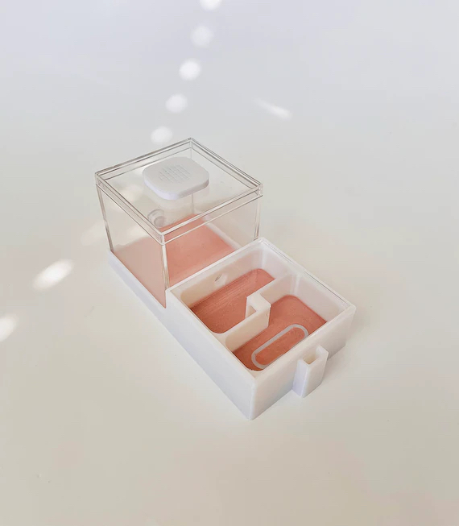
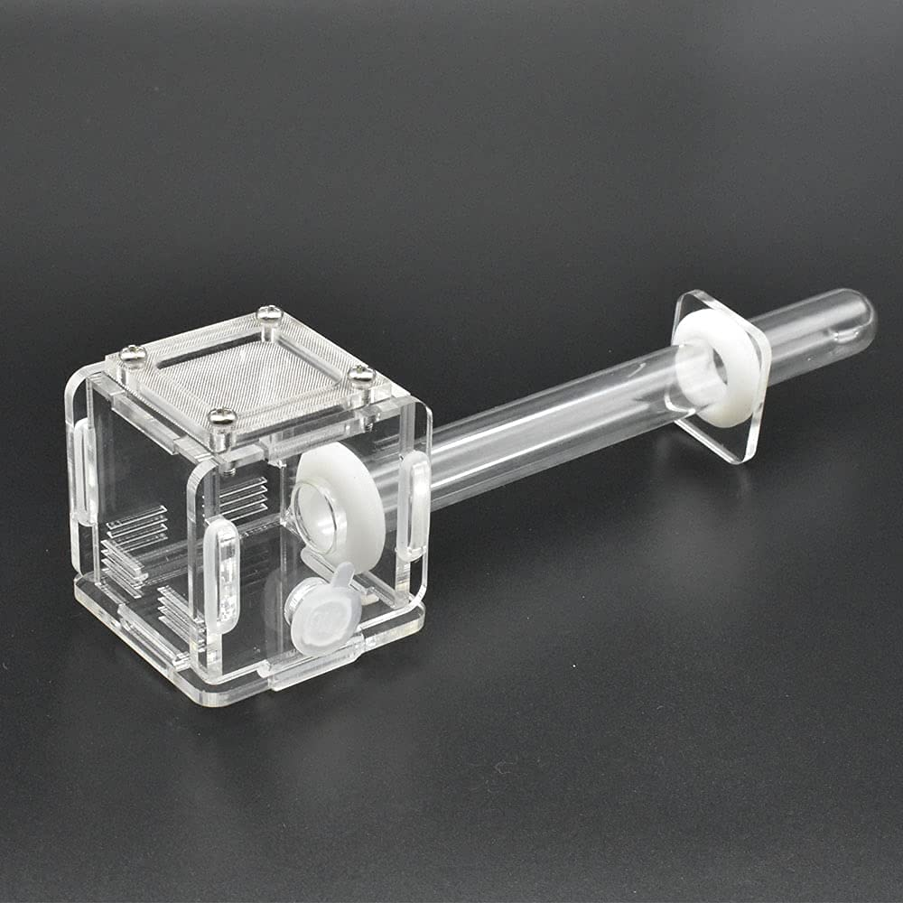

Final Project

- Automated Ant Abode: Feeding ants takes a lot of time, and they always try to get out of their box when you're putting food and water in. It would make my work a lot easier to automate this process. This requires a clear box to view the ants, mesh in the box for air intake, a lid that can be taken off if need be, a food intake port, and a water intake port. Below are a couple existing products that each have some of the features I want to implement.


I would love to automate a set of these through a microcontroller, minimizing human intervention in ant feeding.
- Remote Control Robot Companion: Sleek robots always look cool. It would be awesome and quite a challenge to design a robot with both (limited) movement and grasping capabilites. This just sounds like a project that would test my understanding! I have a couple ideas for how this would actually move, but I'm imagining something like a rover at this point.
- Maybe I'll switch to something else?